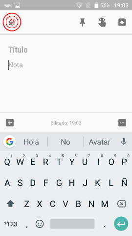

Google Keep es una aplicación de bloc de notas en la nube, es decir, nos permite almacenar información de tipo texto, audio o incluso imágenes, y los almacena en la nube para facilitar la sincronización y el acceso a nuestra información desde varios dispositivos y lugares.
¿Donde podemos conseguirlo?En nuestros dispositivos android es tan sencillo como dirigirnos a la Google Play Store, buscar “Google Keep” y pulsar el botón instalar, una vez se haya completado la instalación podremos acceder a ella desde el cajón de aplicaciones.
Ya lo tengo instalado.. ¿y ahora como creo una Nota de Texto?Al abrir la aplicación, nos encontraremos una ventana principal tal y como en la imagen a continuación:
Pulsaremos en la zona 1 de la captura anterior y nos aparecerá una pantalla donde podremos comenzar a tomar nuestras notas, lo primero que haremos es asignarle un título que sea descriptivo con lo que vamos a almacenar en ella, a fin de que nos resulte sencillo localizarla más adelante cuando lleguemos a tener muchas más notas almacenadas, luego procederemos a rellenar el cuerpo de la nota, una vez terminada su redacción, la guardaremos pulsando en la zona número 2 (ver siguiente captura)
Con esto habremos creado y almacenado en la nube nuestra primera Nota de Texto, ahora ya podremos consultarla siempre que lo necesitemos desde todos nuestros dispositivos que estén vinculados a nuestra cuenta de Google Keep.
Este sería el aspecto de Google Keep con nuestra nota ya creada y almacenada:
A modo de resumen, detallamos los pasos realizados en esta tabla:
| Paso | Procedimiento |
|---|---|
| 1º | Descargamos la aplicación de Google Play Store y la instalamos. |
| 2º | Abrimos la aplicación y pulsamos en "Tomar una nota". |
| 3º | Escribimos un título descriptivo para la nota y la rellenamos con la información deseada. |
| 4º | pulsamos en la flechita atrás (arriba a la izquierda), con esto queda almacenada nuestra nota y lista para futuras consultas. |
Con estas nociones ya podremos comenzar a tomar notas para que nada se nos olvide, existen funciones más avanzadas como por ejemplo: tomar notas de voz, incrustar imágenes o poner alarmas/recordatorios basados en ubicación o simplemente por calendario, pero todo esto y más lo veremos en futuros tutoriales.
Fuentes y páginas de interés.